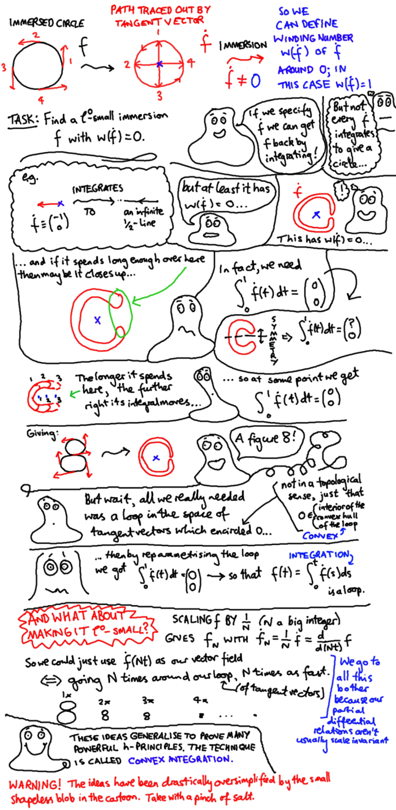

Convex integration (cartoon)
Convex integration (cartoon)
On Thursday I'll be giving a talk on convex integration at the London h-principle learning seminar. This will be a dry and technical subject, so I thought I'd create some light-hearted preliminary reading. Here then, in cartoon-form, is the simplest version of 1-dimensional convex integration, used to construct an immersed loop in the plane whose tangent vector has winding number zero.
The technical details of the talk will be heavily based on these notes by Vincent Borrelli, which is an excellent place to learn all this stuff from.
Warning: The cartoon is big (about 1MB) and may take time to load.

Further technical remarks
As you will see during the talk, a key aspect (not strictly necessary in the example of the cartoon) is making the loop happen \(N\) times faster. Also, it's usually important for the basepoint of the loop to vary. Imagine how you would use the ideas in the cartoon to construct an immersed loop with winding number 1; you would use a family of loops \(\dot{f}_{\theta}(t)\), like the one in the cartoon, but rotated an angle \(\theta\) around the origin, then take the "diagonal loop" \(\dot{f}_t(t)\).